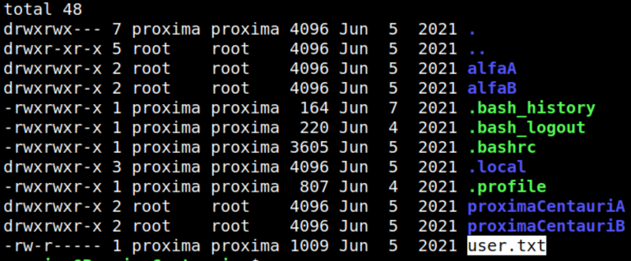
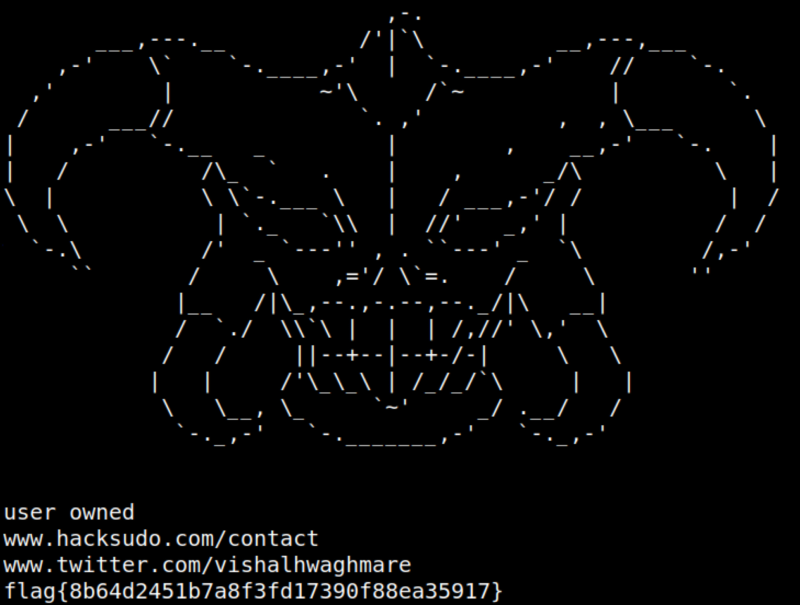

4.6 Connect via SSH (Second flag)
1. From your Kali Machine connect via SSH.
Username: proxima
Password: alfacentauri123
$ssh proxima@192.168.12.34
Output:

2. List the files.
proxima@ProximaCentauri:~$ls -al
Output:

3. Show the “user.txt” file.
proxima@ProximaCentauri:~$cat user.txt
Output:
